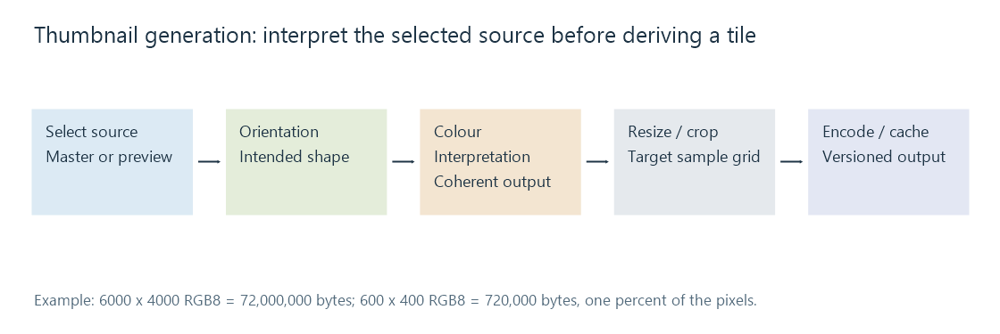

Image thumbnail generation
Thumbnail generation creates a smaller viewing derivative from a selected, oriented and interpreted source image, with cache identity determining when that derivative remains valid.
A thumbnail is a separate, smaller image useful for browsing. It may come from an embedded preview or be generated from a principal image. Displaying the original in a small layout box does not necessarily create that derivative or reduce the original's decoding work.
Match the useful output grid
An invented 300-layout-pixel-wide tile on a display using two device pixels per layout pixel can use a 600-pixel-wide derivative. For a 3:2 photograph, that is 600 × 400.
Compare it with a 6000 × 4000 source:
| Representation | Pixels | Ideal tightly packed RGB bytes |
|---|---|---|
| Original | 24,000,000 | 72,000,000 |
| 600 × 400 derivative | 240,000 | 720,000 |
The derivative has one percent of the source's pixels in this example. Encoded sizes have their own compression relationship.
Producing the thumbnail may still require decoding a larger image or using a codec-specific reduced-resolution path. A small delivered file does not establish low peak memory during generation.
Select and interpret before choosing the crop
A raw or multi-image resource may contain a preview different from its master. First choose which picture supplies the intended appearance.
Apply a coherent orientation state, then establish its visual dimensions. A portrait photo stored as a landscape grid can otherwise receive a landscape crop before its direction is resolved.
The generation route also needs colour interpretation and an appropriate resize/crop policy. Alpha and animation add their own requirements: a logo may need coverage retained, while an animated source needs a selected reconstructed canvas.

A cache entry represents a particular derivation
An original conceptual cache identity could contain:
source identity + source version
+ target dimensions + crop policy
+ orientation/colour processing + output format
This is an explanatory model, not a documented Emby cache-key schema.
If the source changes but the cached derivative is reused, a viewer can continue to show an old rotation, crop or image. If the image-processing rules change, the same source version may also need a new derivative.
That separates stale preview from wrong master. In an Emby comparison, identify the original and the actual delivered image before treating the displayed result as evidence that the master was not edited.
A thumbnail has a different preservation role
An embedded preview can be convenient without reflecting the latest external editing recipe. A generated thumbnail can omit descriptive records that remain in the master.
Keep that distinction when moving or rebuilding a library. A cache is replaceable derivation work; the source image and metadata needed to reproduce the intended presentation carry a different value.